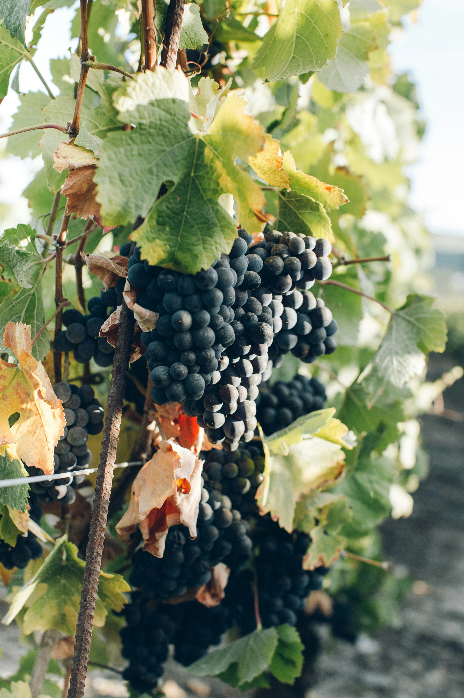

Le verre arrive. La robe est ambrée, pas le doré d'un Sauternes, quelque chose de plus mat, presque cuivré, légèrement trouble. "C'est blanc, ça ?" La question est posée sérieusement. Quelqu'un se penche. Quelqu'un d'autre touche son voisin. Le verre passe. En bouche : une texture qu'on n'attendait pas, une légère résistance, des tanins là où les blancs n'en ont jamais. Et cette couleur. On regarde encore.
C'était une Malagouzia en macération, un cépage grec, blanc, vinifié avec la peau pendant trois semaines. Pas pressé et envoyé en cuve comme d'habitude. Laissé en contact. Le jus, les peaux, le temps. Le résultat dans le verre est cette chose qu'on appelle vin orange, vin de macération, skin-contact, selon d'où on vient et ce qu'on essaie de mettre à distance.
Ce que la peau donne
Dans la vinification classique d'un blanc, le raisin est pressé rapidement. Le jus part en fermentation, les peaux vont au compost. Tout ce que porte la peau, pigments, tanins, composés aromatiques liposolubles, reste dehors. C'est une décision. Elle donne des blancs nets, frais, légers. C'est souvent ce qu'on veut.
La macération change le calcul. On laisse le moût en contact avec les peaux, une heure, une journée, ou trois semaines. À chaque heure, le vin extrait davantage. Ce n'est pas seulement une question de couleur. La peau d'un raisin blanc porte des polyphénols qui donnent de la structure, une légère astringence, une densité différente. Le vin devient plus apte à vieillir. Et presque toujours, plus difficile à classer.

Vigne en fin d'été, Provence, 2025. La peau est là depuis le début.
Ce que ça fait dans le verre
La première chose qui déroute, c'est la texture. Un blanc est normalement fluide, rapide, glissant. Un orange arrive différemment, quelque chose accroche légèrement, pas désagréablement. C'est la structure. La même chose qui fait qu'on peut garder une bouteille dix ans sans qu'elle s'effondre sur elle-même.
Les arômes changent aussi. Le fruité immédiat cède à quelque chose de plus profond, peau d'orange confite, noix fraîche, abricot sec, herbes sèches. Selon la durée de macération, le cépage et la région, on peut trouver du miel, du curcuma, du thé. Ces codes-là ne sont ni ceux du blanc ni ceux du rouge. C'est là que les dégustateurs entraînés décrochent les premiers. Le vin ne rentre plus dans la case.
Pourquoi ça intéresse à table
Le vin orange est peut-être le meilleur accord avec les cuisines du Moyen-Orient, de Géorgie, d'Asie centrale. Les plats épicés, texturés, complexes, qu'un blanc trop fin réduirait à rien et qu'un rouge couvrirait. L'orange s'installe entre les deux et tient sa place. Il y a une raison pour laquelle la Géorgie fait ça depuis huit mille ans en amphore, et ce n'est pas parce que c'est à la mode.
C'est pour ça qu'on en inclut un dans l'atelier débutant vin nature. Pas pour provoquer. Pour poser une question simple : est-ce que la couleur d'un vin définit ce qu'il est ? Ou est-ce que ce qui est dans le verre prime sur la catégorie ? On le verse. On laisse les gens regarder, hésiter, goûter. La réponse varie. C'est souvent à ce moment-là que la conversation devient sérieuse.